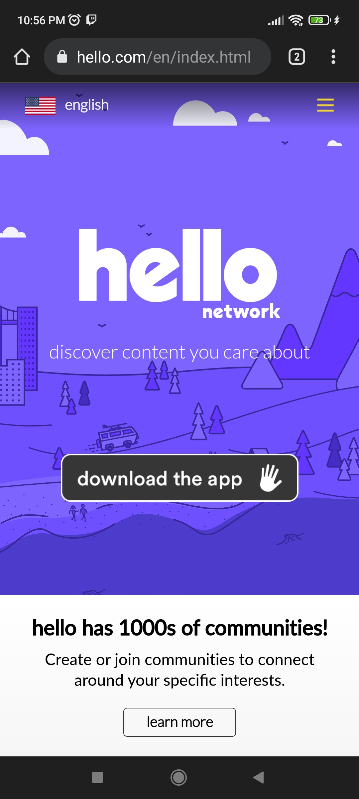

White Space and Clean Design

Grouping related items and information on this site is very organized and well-defined. Through boxes and spacing, viewers can identify the relationship of the items on this site.
Proximity
Amazon

When we organize information in our designs, we can use proximity to create relationships between elements to aid in understanding the information presented. For example, when viewing the Amazon website we see an image close to one of the others, we create a relationship in the entire group. We perceive them as related and we expect the contents to be similar.
Contrast
Hello
Thrillophilia uses a lot of repetition in their design. The use of white icons and rounded border photo thumbnails create consistency and well-organized information in their website.